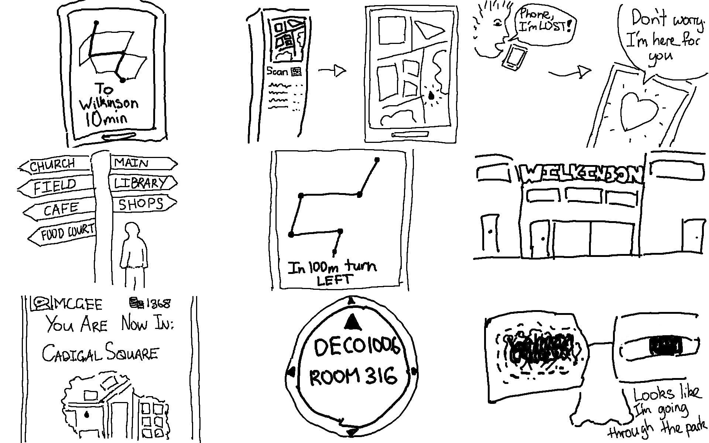
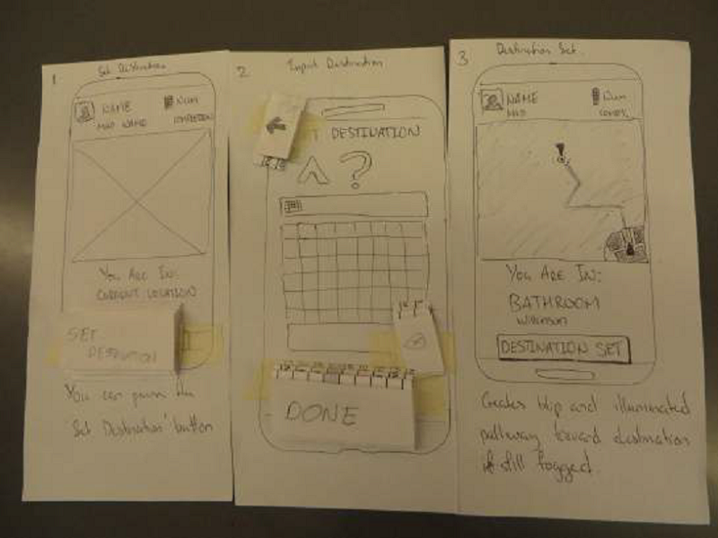
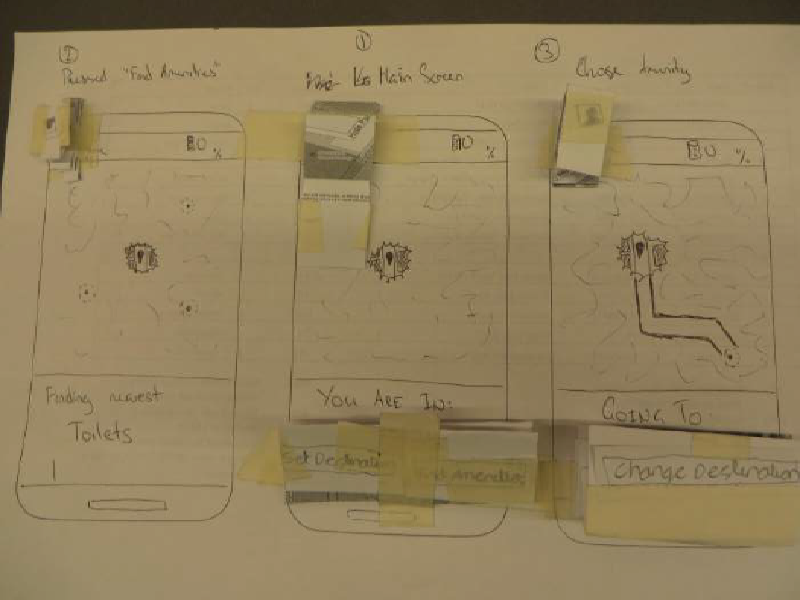
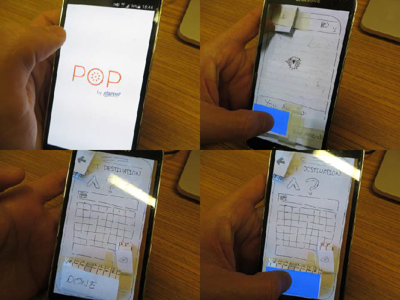

1st Year, 1st Semester - What the Fog
Problem Scenario
Through a combination of physical and digital interventions, repurpose the existing Sydney University campus environment to help people smoothly navigate to different locations and find their next class.
Research
It was a criteria for our assessment to use questionnaires, interviews and context observation.
Our research led to the following insights:
- New students had the most trouble navigating their way around the university and needed assistance only for a couple of weeks
- Students who explored mainly did so to find less populated places to study or relax in their breaks.
- The apps currently available do not perform as expected.
- The students largely do not know of the places of interest available to them in the university.
Personas
David couldn’t wait to start the next chapter of his life at university.
At 18 years old, he is a first year engineering student who just graduated
high school.
Before the start of the semester, he attended O-week to meet his fellow classmates and investigate
what buildings he would be regularly visiting. He was excited but overwhelmed by the size of the
campus.
He was confident that he would be able to easily identify the buildings but come the start of the
semester, David still needed a reference for navigation. He used the USYD app but found that it only
had information on the more popular buildings and wished it had more information on his less
commonly known buildings.
He ended up using Google Maps in the first couple of weeks of the semester to find the buildings
where his classes are held. Finding the building was only half the struggle, he had to look high and
low for his room. Room 281, room 281, or was it room 182? I think I remember it being 182. In the
midst of the class-finding scramble David had forgotten his room number and whipped out his phone
to refer to his timetable.
There was no internet connection and he hadn’t saved his schedule for offline use. Things weren’t
looking too good for his first week of semester. He eventually asked another student if they knew
where his class was and luckily she was making her way to the very same class and led him to the
correct room number.
Alice is in her second year of study at USYD working toward a science
degree. She’s also more familiar with university life and is hoping she
can focus more on her studies this year.
Her classes this semester are quite spread throughout the campus and only has
difficulty with the lesser-known buildings. She finds that the apps currently available do
not have much information on them.
“The problem is that they’re very user generated which means that the popular buildings
have all the information on how to get there and what to look for but the more obscure
buildings have almost nothing on them.”
She has learned to accept the partial functionality of these apps and only uses them to
locate the general area of where the building is located.
“Then I just look for signs around the area and landmarks around the area. Not the best
way but it works!”
In her spare time Alice loves to explore the campus to find less populated places to
study and just less populated places in general. She used to go to Fisher Library to study
but found that the students there often talk and eat. She’s found rooms in buildings not
commonly visited and enjoys having a quiet place to study or relax during her breaks.
Ideation Sketches
Iterations
 